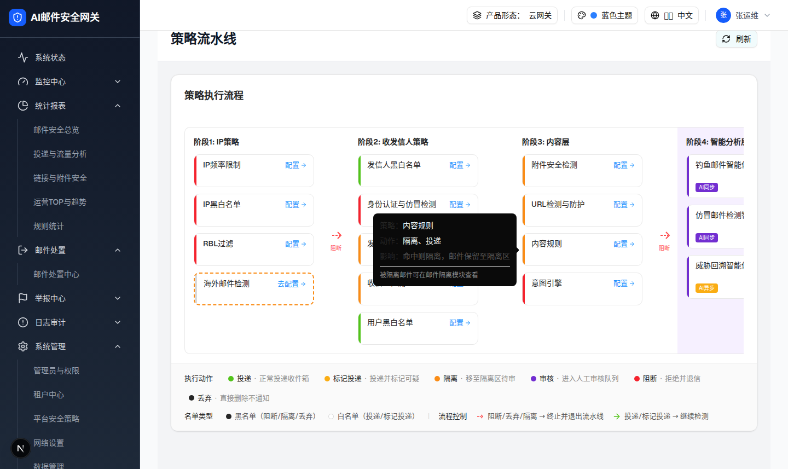

2.1 策略流水线入口卡片 Content Policy Card
| 交互层级 | 层级0：页面默认态中的策略入口卡片 |
|---|---|
| 触发路径 | 打开 /filter-rules/pipeline，在阶段3内容层定位「内容规则」卡片。 |
| 可点击目标 | 浏览器验证命中 220px × 60px 卡片（w-[220px] h-[60px]），文本为「内容规则 / 配置→」。点击卡片整体或「配置」按钮均打开内容策略抽屉并选中内容规则。 |
| Hover Tooltip | 悬浮 300ms 后显示：「策略：内容规则 / 动作：隔离、投递 / 影响：命中则隔离，邮件保留至隔离区 / 被隔离邮件可在邮件隔离模块查看」（浏览器实测文案）。 |
0交互层级 0：策略卡默认态（hover 显示 Tooltip，点击进入 2.2）
内容规则
配置 →
策略：内容规则
动作：隔离、投递
影响：命中则隔离，邮件保留至隔离区
被隔离邮件可在邮件隔离模块查看
动作：隔离、投递
影响：命中则隔离，邮件保留至隔离区
被隔离邮件可在邮件隔离模块查看

| 元素 | 实际文案/属性 | 交互行为 | 备注 |
|---|---|---|---|
| 卡片标题 | 内容规则 | 点击卡片整体打开内容策略抽屉 | policy.key = content，nameKey pipeline.contentRules |
| 配置入口 | 配置 + ArrowRight(12px) | 点击同样打开抽屉并选中内容规则（stopPropagation 后走同一逻辑） | 未配置态文案为「去配置」，本卡不在 unconfigured 集合中 |
| 左侧色条 | 橙色 #fa8c16，宽 4px | 无独立交互 | 由 type = configurable（隔离型）推导 |
| Tooltip | 策略/动作/影响 三段式 | hover 300ms 延迟显示 | configurable 类型动作为「隔离、投递」 |
DOM 树比对结果
| 比对项 | demo 实际 DOM | 提取/预览 HTML | 是否一致 |
|---|---|---|---|
| 根节点 | div.w-[220px].h-[60px].rounded-lg.cursor-pointer，nodeCount 9，data-slot=tooltip-trigger | .preview-card[data-demo-extracted]，同尺寸 | 一致 |
| 子节点 | 色条 div.w-1.bg-[#fa8c16] + 内容 div（标题 span + 配置 button） | preview-bar（橙色4px）+ preview-card-body（标题 + 配置） | 一致 |
| 关键文案 | 内容规则 / 配置 | 内容规则 / 配置 → | 一致 |
| Tooltip 文案 | 策略：内容规则 / 动作：隔离、投递 / 影响：命中则隔离…（radix popper 提取） | 同文案 | 一致 |
| 触发结果 | 打开内容策略抽屉（setContentDrawerPolicy("content")） | 锚点跳转至 2.2 规格 | 一致（规格内等效） |